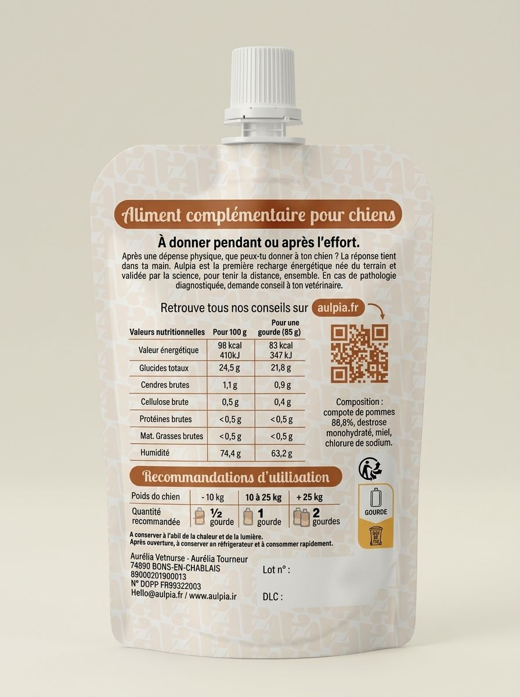
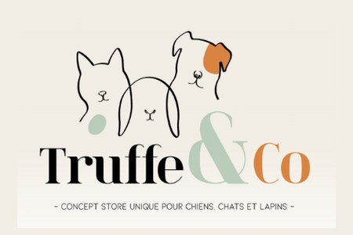
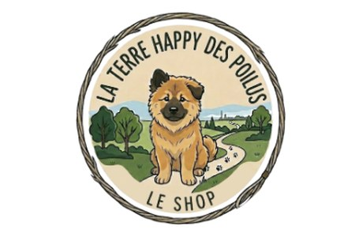
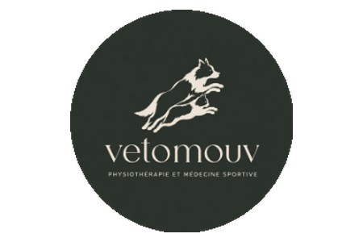
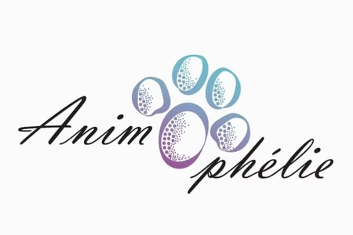

La recharge énergétique de 85 g pour chien actif
Avant de formuler, il a fallu comprendre ce que dépense un chien sur un sentier, et ce qu'il mérite à la pause. Le résultat tient dans une poche souple de 85 g, que ton chien lèche directement au bec, pendant ou après l'effort : tu t'arrêtes, tu dévisses, il lèche, et vous repartez à votre rythme.
Aliment complémentaire pour chiens. Ne se substitue pas à un repas, sauf avis contraire de ton vétérinaire.


Quatre ingrédients, rien à ajouter
Chaque gourde contient de la purée de pommes (88,8 % de la recette), du dextrose alimentaire, du miel français et une pointe de sel de Guérande. Rien d'autre.
85 g, le format des gourdes de purée de fruits pour enfants : connu, pratique, facile à transporter dans un sac à dos ou une ceinture.
Base hydratante et appétente, à pH naturellement bas : facile à digérer.
Glucose pur, absorbé rapidement : la dose est calibrée pour l'équilibre glucose/fructose de la recette.
Surtout pour l'appétence : un goût que le chien apprécie, et un petit apport de glucides en plus.
Facilite l'absorption intestinale du glucose et renforce l'appétence.
| Nutriment | Pour 100 g | Pour 1 gourde (85 g) |
|---|---|---|
| Valeur énergétique | 98 kcal | 83 kcal |
| Glucides totaux | 24,5 g | 21,8 g |
| Humidité | 74,4 g | 63,2 g |
| Protéines brutes | < 0,5 g | < 0,5 g |
| Matières grasses brutes | < 0,5 g | < 0,5 g |
| Cendres brutes | 1,1 g | 0,9 g |
| Cellulose brute | 0,5 g | 0,4 g |
Valeurs issues de l'analyse Eurofins, rapport de synthèse n° AR-863-2026-00134514-02, par gourde de 85 g.
Aucun ingrédient dopant, même en course officielle
La gourde ne contient aucune substance dopante. Tu peux la donner en toute sérénité, à l'entraînement comme le jour d'une course officielle.
conservateur
additif
exhausteur de goût
substance dopante
Quand et combien en donner ?
À donner pendant ou après l'effort. Pour les courses de traction, une moitié peut se donner 30 min avant le départ. La quantité recommandée dépend du gabarit de ton chien.
* Les 2 gourdes peuvent être réparties sur la durée de l'effort.
Selon le sportCombien en donner à ton chien ?
Indique le poids de ton chien pour voir la quantité recommandée et le bon moment pour la donner.
Indication générale, à adapter à ton chien. En cas de doute, demande conseil à ton vétérinaire. Voir les précautions →
- Avant ouverture : à conserver à l'abri de la chaleur et de la lumière.
- Après ouverture : à conserver au réfrigérateur et à consommer rapidement.
Aulpia lance pour l'instant un seul format, 85 g : des formats S, M et L sont à venir.
Dans quels cas ne pas donner Aulpia
Aulpia ne contient aucun ingrédient nuisible pour un chien sain : pas d'additif, de conservateur ni de colorant. La gourde est déconseillée dans les cas suivants :
- Diabète ou trouble de l'insuline
- Pancréatite (active ou passée)
- Insuffisance rénale
- Animal malade ou en convalescence
- Trouble digestif aigu (diarrhée, vomissements)
- Maladie endocrinienne (hyperadrénocorticisme, insulinome)
- Avis vétérinaire défavorable
En cas de doute, demande conseil à ton vétérinaire. Cette composition est validée par une vétérinaire spécialisée en physiologie et nutrition du chien sportif.
Nos boutiques partenaires

La terre happy des poilusBoutique en ligne
VetoMouvToulouse
AnimophélieSaint-Cergues
Les stocks sont limités : un petit coup de fil avant de te déplacer, c'est plus sûr ! Liste mise à jour le 19 novembre 2026.
Ce qu'on me demande le plus
Est-ce que la gourde fait grossir mon chien ?
Non. Donnée pendant ou juste après l'effort, l'énergie de la gourde est utilisée au fur et à mesure par l'organisme, pas stockée. Même en cas de léger surplus par rapport à la dépense réelle, ce surplus participe à la récupération plutôt que de faire grossir.
Est-ce que la gourde agit comme un excitant ?
Non, Aulpia ne contient aucun stimulant. La composition se limite à de la purée de pommes, du dextrose, du miel et une pointe de sel, des sucres simples qui apportent de l'énergie rapidement disponible, sans caféine ni excitant.
Puis-je donner Aulpia lors d'une course officielle ?
Oui. La gourde ne contient aucun ingrédient dopant : uniquement de la purée de pommes, du dextrose, du miel et du sel, sans conservateur, additif ni exhausteur de goût.
Comment conserver la gourde après ouverture ?
À consommer dans la journée, ou sous 3 jours au réfrigérateur.
Combien de temps puis-je garder la gourde fermée ?
Jusqu'à 1 an à l'abri de la lumière et de la chaleur, dans la limite de la DLC indiquée sur l'emballage.
Pourquoi seulement ½ gourde pour les petits chiens ?
Aulpia lance pour l'instant un seul format, 85 g. Le dosage par ½ gourde permet d'ajuster l'apport aux petits gabarits, en attendant les formats S, M et L à venir.
Mon chien est diabétique, puis-je lui donner Aulpia ?
Non. Le diabète fait partie des contre-indications d'Aulpia, au même titre que la pancréatite, l'insuffisance rénale ou un trouble digestif aigu — voir la liste complète ci-dessus.
Mon chien a des allergies, puis-je lui donner Aulpia ?
La composition est courte et lisible : purée de pommes, dextrose, miel, sel — sans additif, conservateur ni colorant. En cas d'allergie connue à l'un de ces ingrédients, demande conseil à ton vétérinaire avant de donner la gourde.
Peut-on donner Aulpia sans faire de sport avec son chien ?
Oui, la gourde peut aussi se donner comme un simple plaisir : une pause à l'ombre d'un arbre, après une balade, pendant un cours d'éducation, en terrasse le soir, ou même quelques gouttes dans l'eau pour inciter son chien à boire.
Une seule gourde suffit-elle pour tous les sports ?
Oui. Comme un gel énergétique humain, la gourde est calibrée sur le scénario le plus exigeant — c'est le dosage (½, 1 ou 2 gourdes) et le moment qui s'adaptent au sport, pas le produit.
Une autre formule est-elle prévue ?
Oui, une formule de récupération post-effort est en développement, pour la période qui suit la sortie. Aulpia 1 pendant l'effort, Aulpia 2 après.
Prêt·e pour la prochaine sortie ?
La gourde est disponible sur la boutique, à l'unité ou en pack.